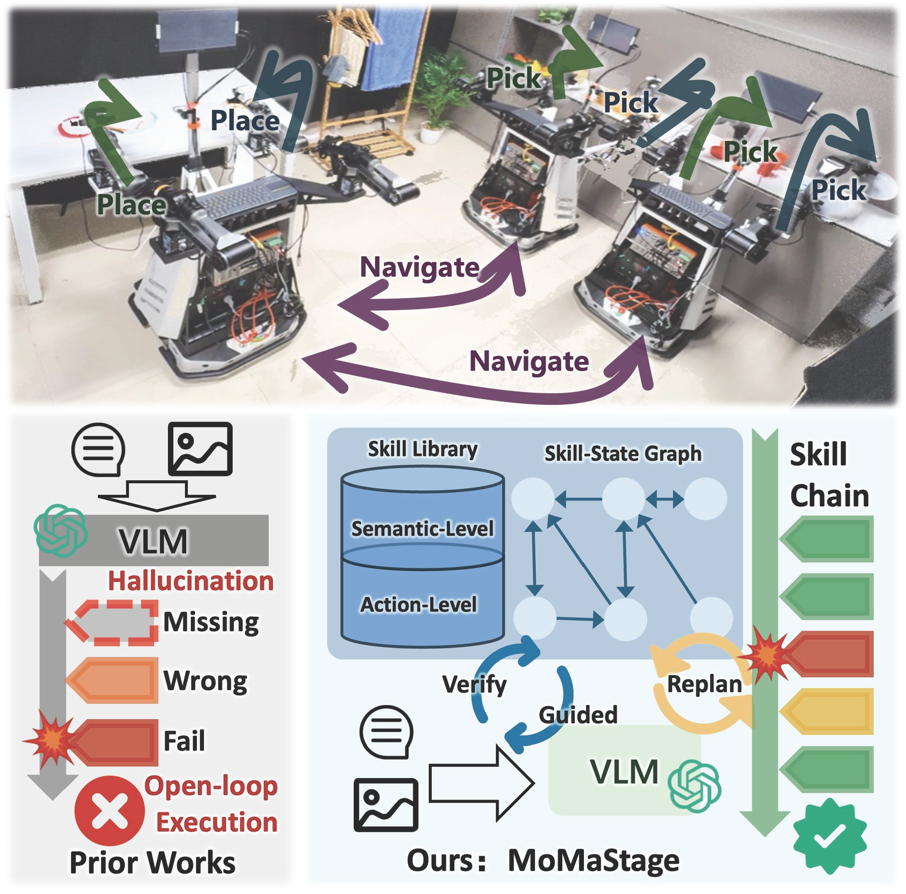

School of Computer Science, Nanjing University
I am a Ph.D. student at the School of Computer Science, Nanjing University, advised by Prof. Jing Huo. Previously, I received my B.S. in Computer Science from Taishan (Honor) College, Shandong University.
My research interests lie in the intersection of embodied AI, mobile manipulation, and robotics.
A research project focused on creating a framework for handling long-horizon complex tasks in mobile manipulation environments. Specifically, we propose MoMaStage, a framework for long-horizon mobile manipulation that drives VLMs to translate instructions into valid skill chains via a Skill-State Graph and a hierarchical skill library, with closed-loop proprioceptive verification for guided replanning upon failure.
